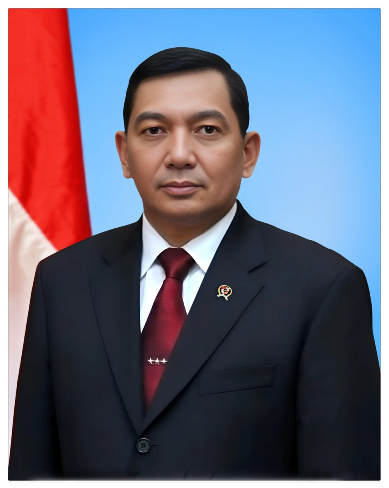
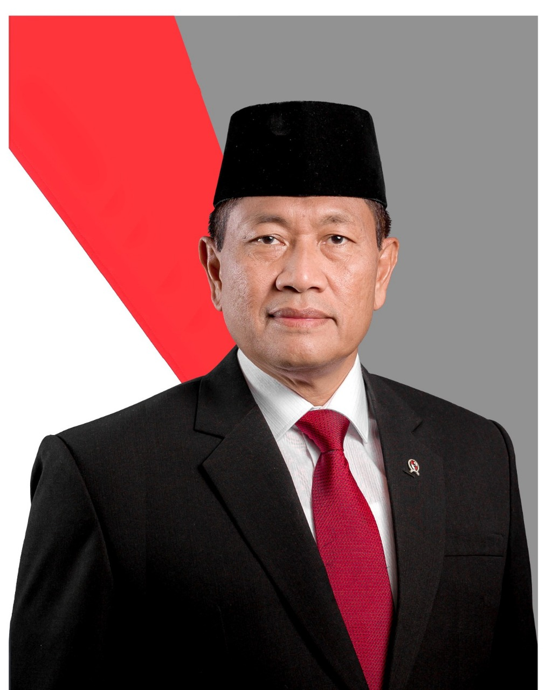
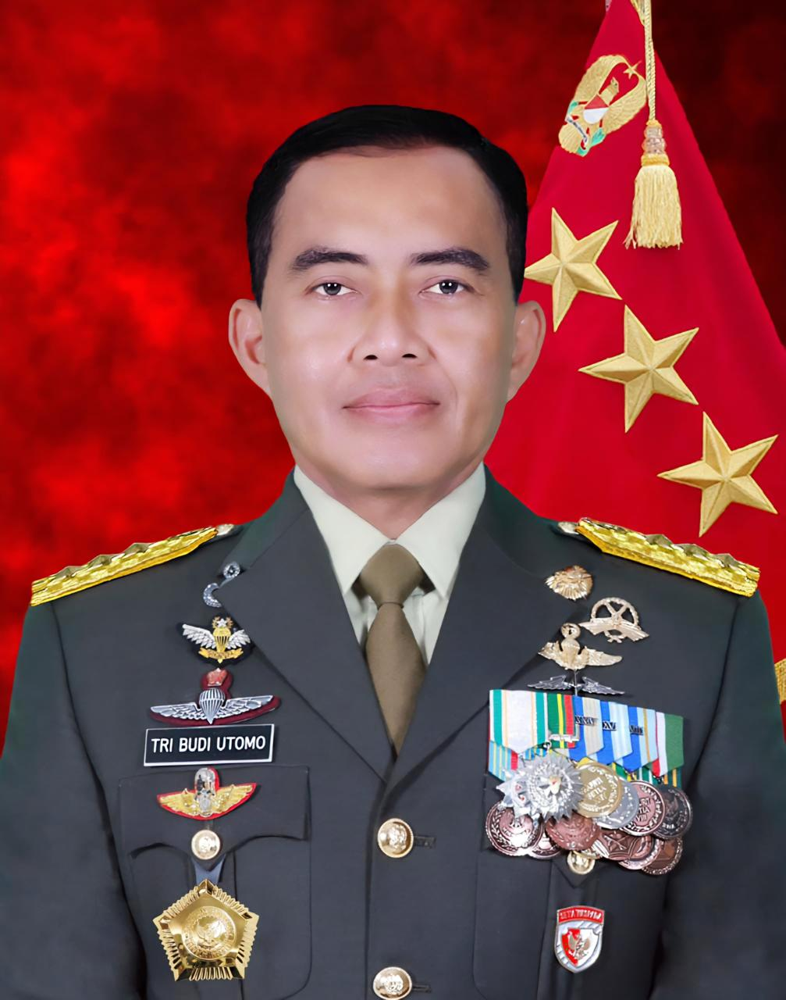

Profil Kementerian Pertahanan Republik Indonesia
Visi
” Terwujudnya Indonesia yang berdaulat, Mandiri dan berkepribadian berlandaskan gotong royong “.
Misi
| No | Misi |
|---|---|
| 1 | Mewujudkan keamanan nasional yang mampu menjaga kedaulatan wilayah, menopang kemandirian ekonomi dengan mengamankan sumberdaya maritim, dan mencerminkan kepribadian Indonesia sebagai negara kepulauan. |
| 2 | Mewujudkan masyarakat maju, berkesinambungan dan demokratis berlandaskan negara hukum. |
| 3 | Mewujudkan politik luar negeri bebas-aktif dan memperkuat jati diri sebagai negara maritim |
| 4 | Mewujudkan kualitas hidup manusia Indonesia yang tinggi, maju dan sejahtera. |
| 5 | Mewujudkan bangsa yang berdaya-saing. |
| 6 | Mewujudkan Indonesia menjadi negara maritim yang mandiri, maju, kuat dan berbasiskan kepentingan nasional. |
| 7 | Mewujudkan masyarakat yang berkepribadian dalam kebudayaan. |
Tentang Kementerian Pertahanan
Kementerian Pertahanan memiliki tugas menyelenggarakan urusan pemerintahan di bidang pertahanan untuk membantu Presiden dalam menyelenggarakan pemerintahan negara. Fungsi-fungsi yang dilaksanakan oleh Kementerian Pertahanan meliputi perumusan, penetapan, dan pelaksanaan kebijakan di bidang strategi pertahanan, perencanaan pertahanan, potensi pertahanan, dan kekuatan pertahanan; pelaksanaan bimbingan teknis dan supervisi atas pelaksanaan urusan Kementerian di daerah; koordinasi pelaksanaan tugas, pembinaan, dan pemberian dukungan administrasi kepada seluruh unsur organisasi di lingkungan Kementerian; dan pelaksanaan dukungan yang bersifat substantif kepada seluruh unsur organisasi di lingkungan Kementerian.
Pimpinan

Sjafrie Sjamsoeddin
MENTERI PERTAHANAN RI
Sjafrie Sjamsoeddin dilantik sebagai Menteri Pertahanan Republik Indonesia (Menhan RI) oleh Presiden Republik Indonesia Prabowo Subianto pada tanggal 21 Oktober 2024 dalam Kabinet Merah Putih Periode 2024-2029.

Marsekal Madya TNI (Purn) Donny Ermawan T., M.D.S., M.S.P
Wakil Menteri Pertahanan RI
Marsekal Madya TNI (Purn) Donny Ermawan T., M.D.S., M.S.P. dilantik sebagai Wakil Menteri Pertahanan Republik Indonesia (Wamenhan RI) oleh Presiden Republik Indonesia Prabowo Subianto pada tanggal 21 Oktober 2024 dalam Kabinet Merah Putih Periode 2024-2029.

Letnan Jenderal TNI Tri Budi Utomo, S.E.
Sekretaris Jenderal Kemhan RI
Letnan Jenderal TNI Tri Budi Utomo, S.E., dilantik sebagai Sekretaris Jenderal Kementerian Pertahanan Republik Indonesia (Sekjen Kemhan RI) oleh Menteri Pertahanan RI Sjafrie Sjamsoeddin pada tanggal 14 November 2024 di Kementerian Pertahanan.
LINK TERKAIT


Hak Cipta © Kementerian Pertahanan Republik Indonesia